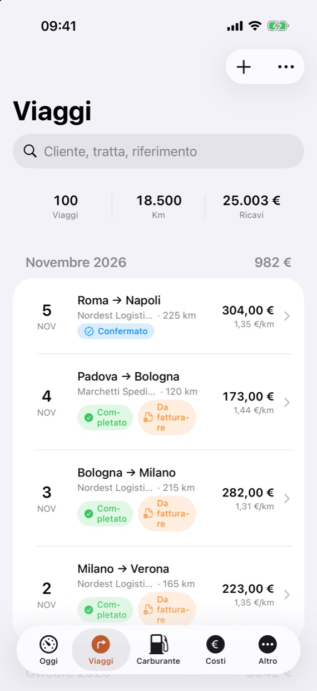
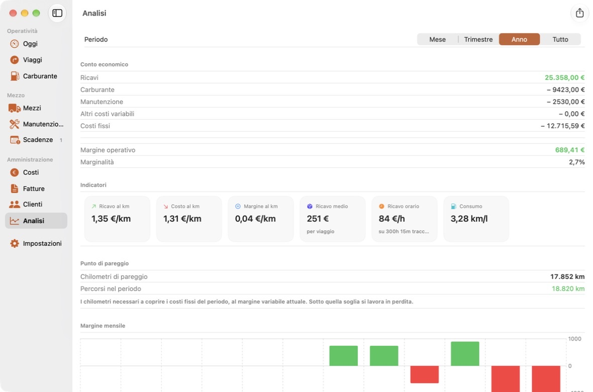
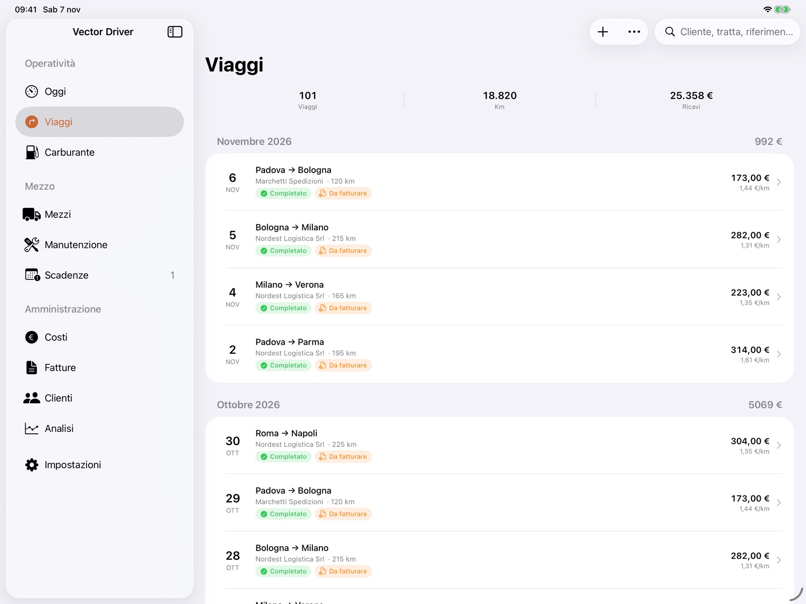
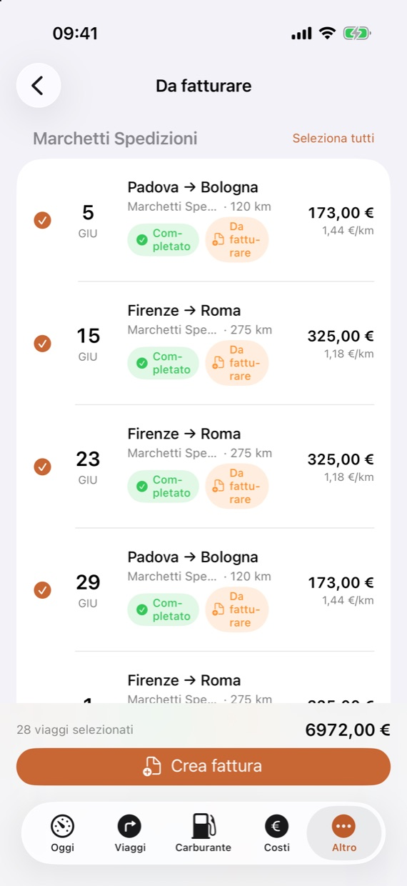
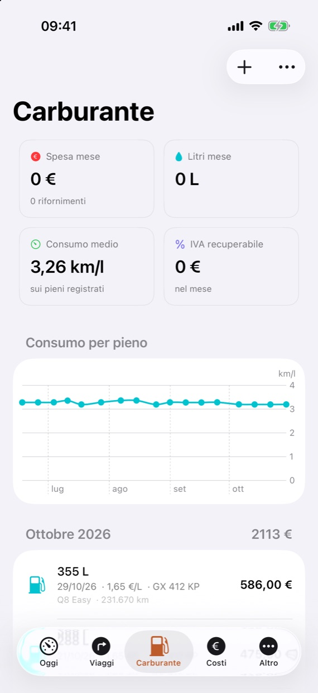
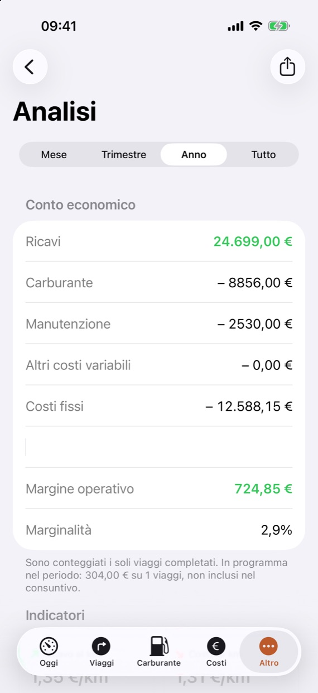

Vector Driver
Il gestionale per chi guida per lavoro, in proprio.
Viaggi, carburante, costi, scadenze e fattura elettronica in un'unica app per iPhone, iPad e Mac. Pensata per l'autotrasportatore con uno o due mezzi: tutto il lavoro d'ufficio, senza un ufficio.
Scarica dall'App Store iPhone · iPad · Mac

iPhone · iPad · Mac
In cabina sul telefono, in ufficio sul Mac
Segni il viaggio dall'iPhone appena scarichi; la sera riprendi conti e fatture sullo schermo grande di iPad o Mac. Con iCloud ritrovi gli stessi dati su ogni dispositivo, senza fare nulla.


Fatturazione
Dai viaggi alla fattura, in un gesto
Selezioni i viaggi completati e non ancora fatturati di un committente, e la fattura è pronta: il file XML FatturaPA da caricare sul tuo canale verso lo SdI e il PDF da mandare al cliente. Credito aperto e scaduto sempre sotto gli occhi.

Carburante
Il consumo vero del tuo mezzo
Registri il pieno con odometro e foto dello scontrino. Da due pieni consecutivi l'app calcola i km/l reali e ne segue l'andamento: ti accorgi subito se qualcosa non va, e sai quanta IVA sul gasolio recuperi.

Analisi
Sai quanto ti resta, davvero
Conto economico del mese, del trimestre o dell'anno: ricavi, carburante, manutenzione, costi fissi e margine. Costo e resa al chilometro, punto di pareggio e una stima di quanto accantonare per imposte e contributi.

E tutto il resto
Scadenze
Revisione, assicurazione, bollo, CQC, visita medica: un promemoria prima e uno il giorno stesso.
Manutenzione
Tagliandi, gomme e riparazioni, con il prossimo intervento a data o a chilometri.
Clienti
Tariffa, termini di pagamento, fatturato e resa media di ogni committente.
Costi
Uscite una tantum e costi fissi ricorrenti, con la quota mensile di ciascuno.
Esportazioni
Ogni elenco in CSV pronto per Excel, da passare al commercialista.
Backup
L'intero archivio in un file, da salvare dove vuoi e ripristinare quando serve.
I tuoi dati restano tuoi
Nessun account da creare, nessun nostro server, nessuna pubblicità né tracciamento. I dati stanno sul tuo dispositivo e, se vuoi, si sincronizzano fra iPhone, iPad e Mac attraverso il tuo iCloud privato, che noi non possiamo leggere. Leggi l'informativa.
Prova per sette giorni
L'app è completa dal primo giorno, senza registrazione e senza carta. L'unica cosa riservata agli abbonati è l'emissione dell'XML FatturaPA.
Finita la prova scegli l'abbonamento mensile o annuale direttamente nell'app: il prezzo nella tua valuta lo vedi lì e sull'App Store prima di pagare. Rinnovo automatico, gestito da Apple. I tuoi dati restano anche senza abbonamento, e il backup si può sempre esportare.
Scarica dall'App Store Gratis da scaricare · iPhone · iPad · Mac
Domande? Trovi le risposte nella pagina di assistenza, o scrivi a support@lucaporta.dev.